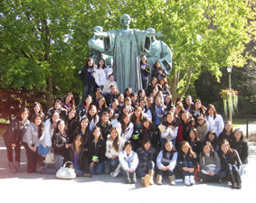
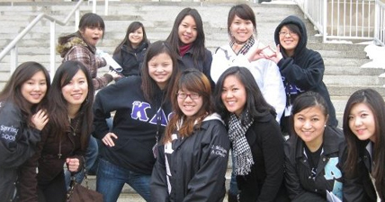
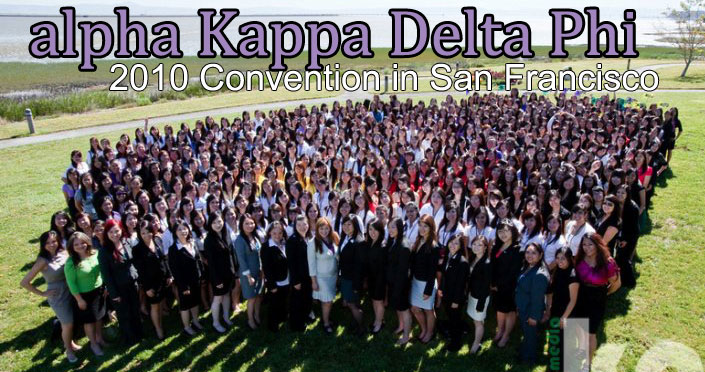

Generally
What is aKDPhi without sisterhood? What is SORORITY life without sisterhood? The answer is nothing. Sisterhood is the foundation with which we have built our chapter on. For all of us, alpha Kappa Delta Phi has become our second home and it is because of that bond, that we can call ourselves a genuine sisterhood. Every minute spent together, whether working, in business, or hanging out, is just another chance for us to grow closer. Separate from our everyday lives, we host a variety of sisterhood events to set aside time to just spend time with one another without thinking about the stresses of school and studying.
Regionally
There are currently 7 chapters within the Midwest Region. During the course of one school year, we hold a variety of annual sisterhood retreats and conferences where everybody in the region gathers together for a weekend of activities and fun. Our annual Fall and Winter events are known as the Midwest Sisterhood Rally and Midwest Sisterhood Conference, respectively, and are hosted by different chapters every semester. Regionally, sisters attend one another’s sisterhood, service, cultural, and academic events.
Over 50% of our sisters nationwide!!
Internationally
There are currently 47 chapters nationwide, stretching from the West Coast, Southwest, Midwest, across to the East Coast, and even over the border into Canada — making us the largest, and most geographically diversified, Asian American sorority nationally and internationally. One of the greatest part about being an aKDPhi sister is being able to visit other cities and states and know that you will be taken care of by your fellow sisters there. During Memorial Weekend of every year, aKDPhi hosts our annual convention held at a different chapter. 2005 was hosted by Houston, TX; 2006 was hosted in Irvine, CA; 2007 was hosted in San Jose, CA; 2008 was hosted in Chicago, IL by University of Michigan; 2009 was hosted in Seattle, WA; and 2010 was hosted in San Francisco, CA. Apart from our annual convention, there are other annual events that are hosted throughout the nation that we take part in. As sisters of this sorority, we are so proud and honored to be a part of such a time old tradition and sorority as alpha Kappa Delta Phi. The opportunities for networking and friendships are endless.
University of Michigan, alpha Kappa Delta Phi 2010-2011
Layout © Maria Lee 2010